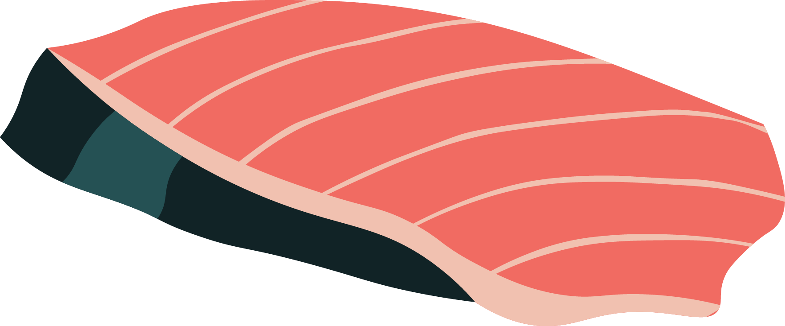

Katsuo is best in the spring, as a lean yet flavorful fish with thin skin that can be kept on when served, then again in the fall, fattened up and full of umami. It belongs to the same family as maguro, but has a very unique, distinct taste that is quite intoxicating. It is usually garnished with grated ginger and chopped scallions, or sometimes with grated raw garlic, and can be served raw or lightly seared or smoked. A fish that is local to Tokyo Bay waters, it is considered a truly classic Edomae-style neta.
To pair with the stronger flavors, sushi chefs commonly pair katsuo with grated ginger and green onion.
Katsuo Sushi